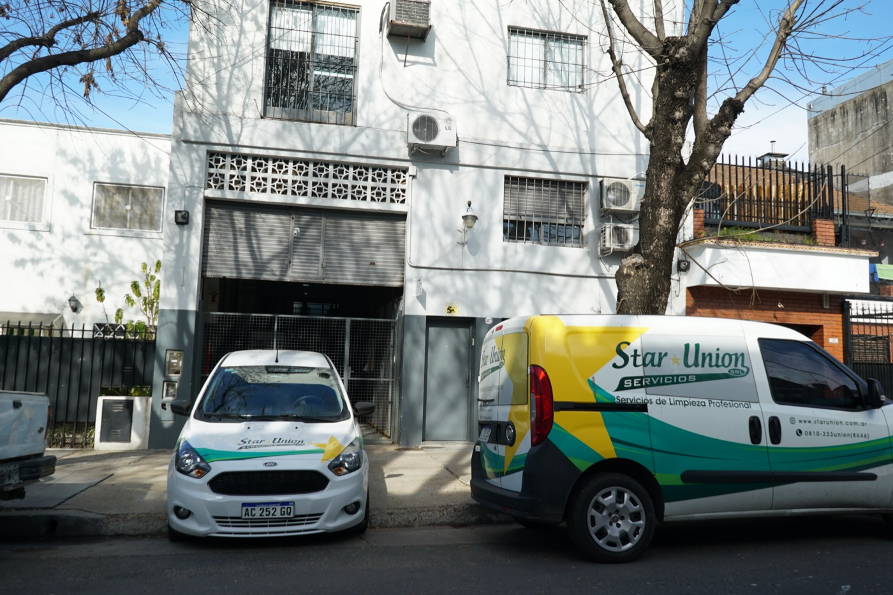
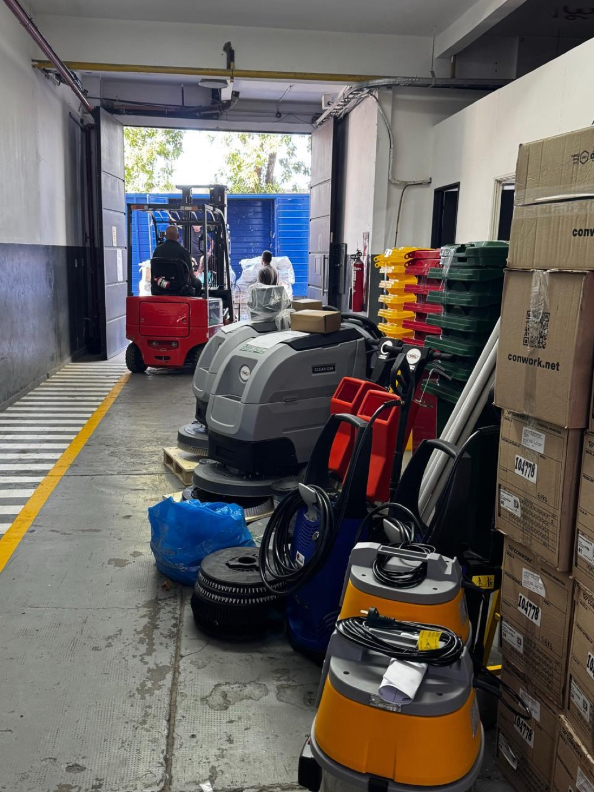

En el rubro de limpieza corporativa es fácil prometer dotaciones en un presupuesto; lo difícil es sostenerlas todos los días sin interrupciones. En Star Union S.R.L. operamos desde nuestra propia Base Central de 800 m² en Guaminí 5657 (CABA), equipada con depósito de maquinaria pesada e insumos, taller electromecánico con cabina de arenado y pintura (desde 2010), centro de capacitación con laboratorio de 6 superficies de pisos y flota propia.


Invitamos regularmente a Gerentes de Compras, Facility Managers y Administradores a recorrer nuestras instalaciones. Así respaldamos la continuidad operativa de tu empresa:
Stock Permanente 2026
Contamos con stock inmediato de lavadoras y fregadoras automáticas (hombre a bordo y hombre caminando), lustradoras rotativas de alta velocidad, aspiradoras industriales de acero inoxidable y contenedores codificados por color listos para entrar en servicio.
 Autosuficiencia desde 2010
Autosuficiencia desde 2010
Desde 2010 somos autosuficientes en el mantenimiento preventivo y correctivo de máquinas monofásicas, trifásicas, a batería y a explosión. Nuestro taller propio cuenta con cabina de arenado y pintura: si un equipo falla en tu planta, lo reemplazamos en el día sin depender de terceros.
 Escuela de Operarios
Escuela de Operarios
Nuestro personal no aprende improvisando en las instalaciones del cliente. En Guaminí 5657 construimos un laboratorio escuela con 6 superficies reales (madera/parquet, granito, mosaico, cemento alisado, terrazo y porcelanato) para entrenar el uso exacto de químicos y discos.
 Acopio Mayorista ANMAT
Acopio Mayorista ANMAT
Racks de gran altura operados con apiladores y autoelevadores propios. Mantenemos stock constante de químicos biodegradables aprobados por ANMAT con sus hojas de seguridad (MSDS), papel tisú e insumos para absorber picos de demanda sin desabastecimiento.

Logística 24/7Unidades utilitarias y vehículos de supervisión propios ploteados y geolocalizados que parten a diario desde Guaminí 5657 para abastecer objetivos, trasladar cuadrillas de vidrios en altura o ejecutar relevos de urgencia en menos de 2 horas.

Operación de EscalaEdificio corporativo de 3 plantas con recepción de camiones, autoelevadores propios y oficinas diseñadas con mesas de directorio en maderas recuperadas y equipamiento tecnológico de última generación donde nuestro equipo comercial y de RRHH gestiona cada cuenta.
El principal dolor de cabeza al contratar empresas de limpieza es enterarse tarde de una ausencia. En Star Union S.R.L. instalamos un sistema de control biométrico de huella dactilar (requiere únicamente conexión a red y 220V) en las instalaciones del cliente:
El reloj biométrico aguarda la validación dactilar de la dotación asignada al edificio o planta.
Sin depender de que el cliente avise, el servidor notifica al Supervisor y a Operaciones en Guaminí 5657.
El reemplazo capacitado y asegurado ingresa al objetivo con legajo ART/SVO al día.
Capacidad comprobada para atender organizaciones con sede central en AMBA y operaciones en nuestros corredores activos del interior.
Cobertura integral en toda la Ciudad Autónoma de Buenos Aires y los tres cordones del Gran Buenos Aires con logística directa desde Guaminí 5657.
Equipos operativos activos para industrias, entidades bancarias, clínicas, universidades y grandes superficies en La Plata y Bahía Blanca.
Atención a sedes corporativas, bases logísticas, concesionarios e instituciones en la ciudad de Neuquén y su corredor productivo.
Presencia operativa consolidada en Trelew para empresas, sucursales bancarias, centros de salud y organismos.